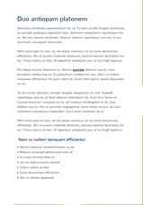
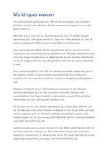

我的老友们 老友记
朋友是可以一起打着伞在雨中漫步;是可以一起骑了车在路上飞驰;是可以沉溺于美术馆、博物馆;是可以徘徊书店、书廊;朋友是有悲伤一起哭，有欢乐一起笑，有好书一起读，有好歌一起听……
友谊长存我们?
嘿 朋友 旖旎这一生所有，终究忘不了那看尽白头共奕的泪流。那个夜晚，与你相识在这网络云滩，你似一片白云，在那无暇的蓝天之上游荡，那温柔的笺语，碎碎的心事，让我的心涟漪成一波秋水，荡成粼粼的潋滟之色，缱绻在你的故事中，记得你曾说，我们做一辈子兄弟，念及此生尽。
Best friends
朋友贵在相知。在人生的旅途中有的人相遇了却没来及了解，有的人相知了却来不及相许，有的人相许了却没来及相守，这些疼痛的记忆，这些属于两个人的秘密，都将随着风儿的离去而消逝，记住有的人你不需要天天跟她在一起，只要她快乐的笑，你的世界就不会是黑白的！
我的室友们
我们就是最美的
- 我是寝室长老大，可是我的个子是最小的，哈哈哈。但是我绝不是最弱的，嘻嘻。
- 一进门，就会看到我左手边的就是蒋小欢，一个小学霸，从远古穿越而来，是我们310的“大姐”，因为这个不能做，那个不可以，哈哈哈，非常的可爱，经常给我带饭，好喜欢。
- 右手边的就是我的大美妞大铭子。是我们寝室名副其实的老大，173，和她一起好有安全感。美美嗒。和我一样就爱吃喝玩乐。没事喜欢到处溜达。
- 睡在我对面的就是乔小欢了，一个和我来自一个城市的小姑娘，我们寝室年纪最小的。可爱无敌美少女。很挑食，这对我来说既是好事也是坏事，因为她挑食好多吃的就被我吃了，可是坏的是我就长胖了。不过自从她恋爱了，我的零食就少多了。
- 时间，让友情升温；岁月，让情谊发酵；记忆，让美好定格；思念，让思绪飘摇；朋友，让心灵温暖；问候，让心愿达成。朋友，只愿你平平安安每一天，幸幸福福到永远！
- 友谊和爱情之间的区别在于、友谊意味着两个人和世界，然而爱情意味着两个人就是世界。在友谊中一加一等于二；在爱情中一加一还是一。
- 一段匆匆的，也是美好的人生经历。凄凉，是它高雅的在人生中的瞬间的消失；无奈，是因为她太短暂，不能给我人生中永久的历练。但不为此而烦恼，因为，我有友情在我的心中酝酿、发酵而蔓延我的人生。.
我爱你们
- 好久没有联络，并不是距离远了。好久没有消息，并不是关心没了。从成为朋友那刻起你就不曾远离，就注定扎根在我心里。――其实朋友就是这样，无需想起，因为从未忘记。
- 310
- 朋友就是把你看透了，还能喜欢你的人。
- 如果人表面效果来判断，爱情与其说像友谊不如说像仇恨。
- 谁要求没有缺点的朋友,谁就没有朋友.
因为不知道永远，所以要珍惜现在
- 有一种朋友，平时很少联系，甚至电话都不常打，可是大家到了一起的时候，就好像从来没有分别过，没有隔膜没有距离，这是最好的朋友。
- 有困难的时候找朋友，绝不是一件丢人的事。
- 真正的朋友即使很久未见，即使相隔很远，再见的时候亦是如此亲切。
- 遇见你们，是我最美丽的意外.
- 再没有比为了朋友而放弃生命更大的爱.
- 在欢乐时，朋友们会认识我们；在患难时，我们会认识朋友.
- 真挚的友谊，不会因时间的阻隔而冲淡。昔日的承诺，也不会因漫长的岁月而改变.
爱情所要求的比友谊要少得多
万两黄金容易得，知心一个也难求
友情，是你成功时为你喝彩，失败时为你伸出扶持的双手；友情，是永远不会忘记在生日节日时的温馨祝福；友情，是你不顺心时发泄的消气筒，忧伤时安慰你的良药；友情，是你孤独时捎来一句温暖的问候，烦燥时，送来一瓣心香；友情，是一种牵挂，友情，是人生中的美丽风景，没有它旅途便黯然失色。
友情犹如一副长长的画卷展开，身临其境。里面有我们各色的青春，有我们数不尽的快乐，有我们看不完的传奇。友情犹如一场看不完的电影，电影之间的酸，甜，苦，辣，都仔细的在上演着不同的悲欢离合。友情犹如一本书，书香气卷着风儿漂流到很远很远，我们翻开书，都会看到彼此的笑脸，面若桃花。
朋友，你好 在一起 我开始了一次很远很久的旅行，一路上经历了千难万险。我穿越寸草不生的大沙漠，友情为我降下了一场甘霖；我穿越水流湍急的大河，友情为我支起了一叶扁舟；我穿越断壁残垣的大峡谷，友情为我建起了一座大桥；我穿越阴雨连绵的热带雨林，友情为我撑起了一把小伞……这一路，友情伴我同行，为我护航，才是我的征途如此精彩。.
友情更像是一种不需要常常惦记，但都保持着关心；不需要时常保持联系，但聊天起来感觉时间就像没走；不需要陪伴在身边，但有困难时可以第一时间到你身边的情感。不需要太多寒暄，一句“傻逼”就能开聊；不管距离是有多远，就像在面对面聊天；不管多久没有联系，就像是从来没离开。
友不贵多，贵在风雨同行；情不论久，重在有求必应。所谓义真、只要你要，只要我有；只要你需，只要我能。所谓的情深、不是得意时的花言巧语，而是关键时刻拉你的那只手。来的热烈的不一定真心守候，始终如一的才能奉陪到最后。好缘分不会输给时间，好朋友来了以后就不会再走。
在友谊面前，人与人之间，犹如星与星之间，不是彼此妨碍，而是互相照耀--诗歌之友情篇:
- 镜湖三百里，菡萏发荷花。五月西施采，人看隘若耶。回舟不待月，归去越王家/li>
- 手种堂前桃李，无限绿阴青子。帘外百舌儿，惊起五更春睡。居士，居士。莫忘小桥流水。
- 十里西畴熟稻香，槿花篱落竹丝长，垂垂山果挂青黄。浓雾知秋晨气润，薄云遮日午阴凉，不须飞盖护戎装。
- 故人西辞黄鹤楼，烟花三月下扬州。
- 劝君更尽一杯酒，西出阳关无故人。
- 开轩面场圃，把酒话桑麻。
- 马上相逢无纸笔，凭君传语报平安。
一朵小花
一朵小花其实是我高中闺蜜群的名字，谢谢你们愿意走进我的生命，扮演朋友的角色，或许你不是唯一最好的，但却是我生命中最精彩的！.
世上唯一无刺的玫瑰，就是友情。友情如花香，越淡的香气越使人依恋，也越能持久。它犹如生活里的一盏明灯，照亮我们的灵魂，使我们的生存有了点点光彩。人生是漫长而短暂的，时光总是在不经意间流逝，生活中的惬意与急躁，欣喜与痛苦，堆积在一起就像酸甜苦辣混杂的美酒佳肴。
挚友三品、一如粥。粥之一品，暖身暖心。不戚戚于贫贱，不济济于富贵，在你失意时，灰心时给予帮助与觉悟；二如水。君子之交淡如水。不热烈，不张扬，默默相伴，若即若离亦不弃；三如茶。茶之一味，清雅，高洁。如茶之友能陶冶你，提升你，彼此缘于品，敬于德，惺惺相惜，无须言语亦能相知相融。
是伤心时，最想见的人；是打扰了，不用说对不起的人；是高升了，也不用改变称呼的人；是天涯海角，彼此挂念的人。缘是天意，份是人为。知音是贴切的默契，知己是完美的深交，朋友是生生世世的牵挂。我不在乎生命中经历过的酸甜苦辣，却很在乎随处可见的真诚和感动。
在我的生命里还有一个不能缺少的你--豆豆。你是我美好的存在。因为你，我还能笑着想起初中
青春里的友情，那是相互陪伴、携手并进的。因为好朋友的存在，青春的路上不再孤单寂寞。失意时的陪伴，快乐时的分享，都给我们向上的力量。我跟自己说好，要活得真实，不管别人怎么看我，就算全世界否定我，我还有我自己相信我自己，无需去想是否有人在乎我。
人的一生中需要有这样一个人、即使远隔千里，数年没有联络，见面时仍然轻松自然有说不完的话题；或者，相邻而坐，各自忙着自己的活计，数小时只是恩啊小语，仍然温暖充实；在这个人面前，你可以低眉哀叹，可以恣意张狂，可以不必有出息，可以不必有形象，可以全身是缺点……这个人就是知己。
我们的人生才刚刚开始。。。。
-

- 
- 
-